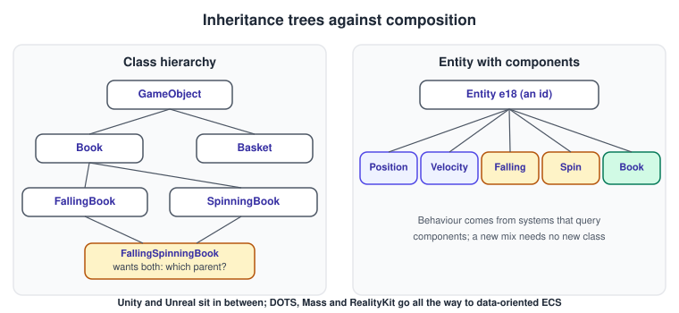
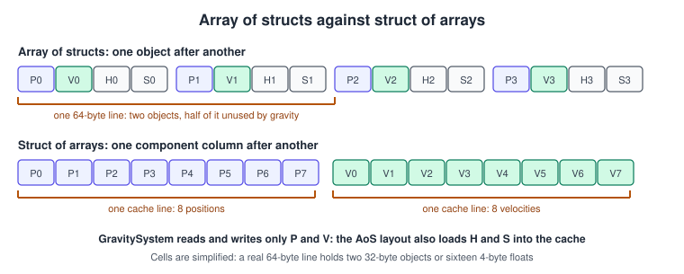
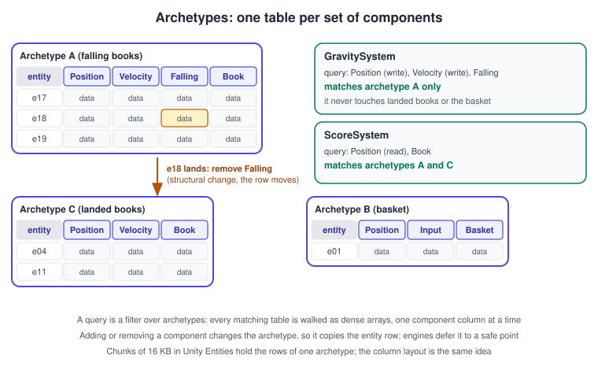

Entity Component System
|
This content was generated with the assistance of AI and should be verified against the official documentation before being relied on in production. |
A game contains thousands of things (books, shelves, bullets, lights, sounds, AI agents) and most of the programming work is deciding how to describe them and where to put the logic that makes them move. This page explains the three answers the industry has given: deep class hierarchies, component-based objects and the entity component system (ECS), and it shows how each of the six libraries of this section lets you work in those styles. It was checked in November 2026 against Unity 6.3 LTS (with the Entities 1.x packages), Unreal Engine 5.8 (including the Mass framework), RealityKit on iOS, macOS and visionOS 26 and the Java 3D behaviour model as maintained by the JogAmp project. The running example is the tiny game "catch the falling books": books fall from the shelf and a basket under them scores a point for each one it catches.
From class hierarchies to components
The first generation of game code modelled the world with inheritance: a GameObject base class, Book and Basket below
it, then FallingBook and SpinningBook below Book. It works until a requirement crosses the tree.

In Figure 1, on the left, a book that both falls and spins forces a choice: duplicate code, multiple inheritance (with the
diamond problem), or a base class that grows every ability "just in case" until it holds the whole game. On the right the same
requirement is a combination of small parts: the entity e18 has Position, Velocity, Falling, Spin and Book. Adding a
behaviour is adding a component. This is composition over inheritance, and it is the idea behind every engine in this
section:
-
Unity attaches
MonoBehaviourand built-in components (Rigidbody,Collider,MeshRenderer) to aGameObject. -
Unreal Engine attaches
UActorComponentandUSceneComponentobjects to anAActor. -
RealityKit attaches
Componentstructs to anEntity. -
Java 3D attached
Behaviornodes to the scene graph, and Selman’s Java 3D Programming and Sun’s The Java 3D API Specification use them to animate objects: a behaviour registers wake-up conditions (elapsed frames, elapsed time, a collision) and runs when they hold.
That is component-based design, and it stores the behaviour in objects: each component owns its data and its update method, and the engine calls each one in turn. It is flexible and tool friendly (the Inspector, the Details panel and Reality Composer Pro all edit components), but each object is separate on the heap and each update is a virtual call. With a few hundred objects that is irrelevant; with a hundred thousand it is the bottleneck.
The ECS idea
A pure ECS separates three things completely:
-
Entity: an identifier, nothing more. It is an integer, often with a generation counter so a stale id can be detected.
-
Component: plain data with no methods, such as
Position,VelocityorFalling. An empty component is a tag and marks an entity (Book,Basket). -
System: logic with no state of its own, which runs over every entity that has a given set of components. The set is described by a query, for example: all entities with
PositionandVelocityandFalling.
A world owns the entities, the component storage and the systems, and runs the systems in a defined order each step.
Behaviour is whatever the systems do to the data; an entity is only what its components say it is. A falling book is an entity
with a Falling tag, and landing is removing the tag.
For "catch the falling books" the whole game fits in five components and four systems:
| System | Query | Does |
|---|---|---|
|
the |
Creates entities with |
|
|
Semi-implicit Euler step; runs in the fixed step of the game loop |
|
|
Adds to the |
|
|
Moves the basket from an action value (see Physics, Audio and Input Basics) |
Data-oriented layout
The benefit of ECS is not the vocabulary; it is where the bytes go. A CPU reads memory in cache lines, typically 64 bytes, and is fast when the next thing it needs is already in the line it just loaded. A system that updates positions with velocities should read only positions and velocities.

In an array of structs (AoS), the usual object layout, the fields of one object sit together: position, velocity, health,
sprite. The gravity system loads all four into the cache to use two. In a struct of arrays (SoA) each field has its own
dense array, so every cache line is full of the numbers the system needs, the hardware prefetcher sees a simple stride, and the
loop can be vectorised with SIMD. This is why DOTS-style systems run orders of magnitude faster than a MonoBehaviour.Update
per object when the entity count is large. It is also why the layout, not the vocabulary, is the thing to keep when you
adapt the idea to a smaller game.
Archetypes and chunks
Engines that store components in SoA form need a way to find all entities with a given set of components. The most common design groups entities by the exact set of component types they have, an archetype, and keeps one table per archetype.

Figure 3 shows the book game’s data. Archetype A holds the falling books and has the columns Position, Velocity, Falling
and Book. When the book e18 lands, removing its Falling tag changes its component set, so the entity moves from
archetype A to archetype C: its row is copied to the other table. That is a structural change. A system query is a filter
over archetypes: GravitySystem needs Falling and so matches only table A, ScoreSystem needs Position and Book and so
walks tables A and C. Systems never test entities one by one; they skip whole tables that do not match.
Unity splits each archetype into fixed-size chunks (16 KB), so that tables grow without reallocating and so that jobs can process chunks in parallel. The trade-offs of this design:
-
iteration over matching entities is the fastest possible (dense arrays, no branching on missing components);
-
adding or removing a component is expensive (a copy to another table), so state flags that flip every frame are better stored as a value inside a component than as a tag;
-
many tiny archetypes waste partly filled chunks, so avoid component combinations that create thousands of unique sets.
The alternative design is the sparse set, used by libraries such as EnTT: each component type has its own packed array plus a sparse index from entity id to slot. Adding and removing a component is cheap, and a query iterates the smallest of its component arrays and checks the others. It is slightly slower for multi-component iteration and faster for churn. Neither design is "the" ECS; engines choose by the workload they expect.
Scheduling, read and write access
Because a system declares which components it reads and which it writes, an engine can run systems with disjoint writes at the
same time on different threads, and order the others. Unity’s ISystem queries mark components RefRO or RefRW, and the
job system schedules from that. This is the second reason for the style: parallelism falls out of data dependencies instead of
locks.
Structural changes (creating entities, adding or removing components, destroying) cannot run while a system is iterating the table, because they move memory under it. ECS libraries therefore record them in a command buffer that is played back at a safe point, normally at the end of the group. Anything the command buffer creates is visible only after playback, which is the most common source of "one frame late" bugs.
ECS in the engines
Unity: GameObjects, then DOTS
Unity’s default workflow is component based: scripts derive from MonoBehaviour, are attached to GameObjects and receive
callbacks (Update, FixedUpdate). The Data-Oriented Technology Stack (DOTS) is the ECS: the Entities package (1.x),
the Burst compiler, the C# job system and Entities Graphics for rendering. GameObjects are authored in subscenes and
baked into entities at build time, so the Editor workflow is kept.
The three pieces of the Bookshelf game’s falling book in Unity DOTS are the components, an authoring component with its baker that converts a GameObject into an entity, and the systems:
using Unity.Burst;
using Unity.Entities;
using Unity.Mathematics;
using Unity.Transforms;
using UnityEngine;
public struct BookVelocity : IComponentData { public float3 Value; }
public struct Falling : IComponentData { } // empty component: a tag
public struct Basket : IComponentData { public float HalfWidth; }
// Authoring: add this to a GameObject in a subscene, the baker creates the entity data.
public class BookAuthoring : MonoBehaviour
{
class Baker : Baker<BookAuthoring>
{
public override void Bake(BookAuthoring authoring)
{
Entity entity = GetEntity(TransformUsageFlags.Dynamic);
AddComponent(entity, new BookVelocity { Value = float3.zero });
AddComponent<Falling>(entity);
}
}
}
[BurstCompile]
[UpdateInGroup(typeof(FixedStepSimulationSystemGroup))]
public partial struct GravitySystem : ISystem
{
[BurstCompile]
public void OnUpdate(ref SystemState state)
{
float dt = SystemAPI.Time.DeltaTime; // the fixed step in this group
foreach (var (transform, velocity) in
SystemAPI.Query<RefRW<LocalTransform>, RefRW<BookVelocity>>().WithAll<Falling>())
{
velocity.ValueRW.Value.y -= 9.81f * dt;
transform.ValueRW.Position += velocity.ValueRO.Value * dt;
}
}
}
[BurstCompile]
public partial struct LandingSystem : ISystem
{
public void OnUpdate(ref SystemState state)
{
var ecb = SystemAPI.GetSingleton<EndSimulationEntityCommandBufferSystem.Singleton>()
.CreateCommandBuffer(state.WorldUnmanaged);
foreach (var (transform, entity) in
SystemAPI.Query<RefRO<LocalTransform>>().WithAll<Falling>().WithEntityAccess())
{
if (transform.ValueRO.Position.y <= 0.05f)
{
ecb.RemoveComponent<Falling>(entity); // structural change, deferred
}
}
}
}Source: Unity Entities package manual.
GravitySystem is a pure function over arrays: it declares what it reads and writes, runs in the fixed-step group, and is
compiled by Burst. LandingSystem removes the tag through an EntityCommandBuffer, so the move between archetypes happens
after the iteration. For most Unity projects the pragmatic choice is the classic GameObject workflow with DOTS only for the
systems that need scale (crowds, bullets, procedural worlds), and Unity supports mixing both in one project.
Unreal Engine: Actors, Components and Mass
Unreal’s core is also component based. An Actor (AActor) is something placed in a level; it has a tree of
components (UActorComponent, USceneComponent, UStaticMeshComponent), and behaviour lives in actor and component
classes and in Blueprints. The Bookshelf’s falling book as an actor with two components looks like this:
// FallingBook.h
UCLASS()
class AFallingBook : public AActor
{
GENERATED_BODY()
public:
AFallingBook();
UPROPERTY(VisibleAnywhere) TObjectPtr<UStaticMeshComponent> Mesh;
UPROPERTY(VisibleAnywhere) TObjectPtr<URotatingMovementComponent> Spin;
};
// FallingBook.cpp
AFallingBook::AFallingBook()
{
PrimaryActorTick.bCanEverTick = false; // components do the work, no per-actor tick
Mesh = CreateDefaultSubobject<UStaticMeshComponent>(TEXT("Mesh"));
SetRootComponent(Mesh);
Mesh->SetSimulatePhysics(true); // gravity from the physics engine
Spin = CreateDefaultSubobject<URotatingMovementComponent>(TEXT("Spin"));
Spin->RotationRate = FRotator(0.f, 90.f, 0.f); // degrees per second
}Source: Unreal Engine documentation: Actors.
For large populations Unreal provides the Mass framework (the MassEntity plugin and the MassGameplay and MassAI
modules built on it), the data-oriented ECS that drove the crowds and traffic of the City Sample and The Matrix Awakens demos.
Its vocabulary maps one to one onto the generic one:
| Generic term | Mass term |
|---|---|
Entity |
|
Component |
Fragment ( |
Tag |
|
System |
Processor ( |
Query |
|
Archetype and chunk |
Archetype and chunk, same meaning |
Deferred structural change |
|
Mass is a plugin and its API has changed between engine releases; read the release notes and the documentation of the engine version in use before building on it. The classic Actor model remains the default for gameplay in Unreal Engine 5.8.
RealityKit
RealityKit, Apple’s framework for AR and spatial content on iOS, macOS and visionOS, is an ECS from the start: an Entity
holds Component values (ModelComponent, CollisionComponent, PhysicsBodyComponent and your own), and System types
update every entity that matches a query once per frame. Reality Composer Pro edits the same components visually. See
Augmented Reality on Apple Platforms and visionOS for the
platform context. The gravity step of the book game as a RealityKit system:
import RealityKit
struct FallingComponent: Component {
var velocity: SIMD3<Float> = .zero
}
struct FallingSystem: System {
static let query = EntityQuery(where: .has(FallingComponent.self))
init(scene: Scene) {}
func update(context: SceneUpdateContext) {
let dt = Float(context.deltaTime)
for entity in context.entities(matching: Self.query, updatingSystemWhen: .rendering) {
guard var falling = entity.components[FallingComponent.self] else { continue }
falling.velocity.y -= 9.81 * dt
entity.position += falling.velocity * dt
entity.components[FallingComponent.self] = falling
}
}
}
// Once, before the scene is used, for example in the app's initialiser:
FallingComponent.registerComponent()
FallingSystem.registerSystem()RealityKit systems run once per rendered frame with a variable deltaTime, while physics is performed by the engine. Components
are value types, so a modified component must be written back, as the last line of the loop does.
WebGL, three.js and OpenGL
OpenGL and WebGL are graphics APIs without any object model, and three.js models the world as an Object3D tree (see
Scene Graphs and Asset Formats), not an ECS. Applications that need the
data-oriented layout bring a library, such as bitECS or Miniplex for JavaScript, EnTT or flecs for C++, and drive their
systems from the loop. React Three Fiber maps the scene graph onto React components, which is a different idea of the same
word.
Java 3D behaviours
In Java 3D a Behavior is a leaf node with a scheduling bound. Its initialize() registers a wake-up condition, and
processStimulus is called when the condition holds and must register the next condition. It is the ancestor of an engine
script and of a system that runs "every N frames":
import javax.media.j3d.*;
import java.util.Enumeration;
public class SpinBehavior extends Behavior {
private final TransformGroup target;
private final Transform3D step = new Transform3D();
private double angle = 0.0;
private final WakeupOnElapsedFrames everyFrame = new WakeupOnElapsedFrames(0);
public SpinBehavior(TransformGroup target) { this.target = target; }
@Override public void initialize() { wakeupOn(everyFrame); }
@Override public void processStimulus(Enumeration criteria) {
angle += Math.toRadians(1.5);
step.rotY(angle);
target.setTransform(step);
wakeupOn(everyFrame); // must re-register
}
}This is the Java 3D 1.5 signature; the JogAmp 1.7 continuation declares processStimulus with an Iterator of
WakeupCriterion instead of the raw Enumeration. The behaviour runs only while the viewer’s activation volume intersects the behaviour’s scheduling bounds, a culling idea that
modern engines express with distance and visibility rules instead.
Choosing a style
| Situation | Prefer | Why |
|---|---|---|
A few hundred active objects, an editor-driven workflow |
Component-based (GameObjects, Actors) |
Tooling, Blueprints and the Inspector are built for it, and CPU cost is not the limit |
Thousands to millions of similar entities (crowds, bullets, particles with logic) |
Data-oriented ECS (DOTS, Mass, a library) |
Cache-friendly iteration and parallel jobs |
Mostly the same objects with different behaviour mixes |
Either, with small, focused components |
The benefit is composition, not the storage |
AR and spatial apps on Apple platforms |
RealityKit components and systems |
The framework is built on them |
A small web game |
A scene graph plus plain arrays |
An ECS library adds overhead for little gain |
Common mistakes
-
Big components. A
Transformwith everything inside brings back the AoS problem. Split data by which systems read it together. -
Behaviour in components. A component with methods that mutate other components is an object again, with hidden dependencies. Keep logic in systems.
-
Structural changes in a loop. Adding or removing a component while iterating invalidates the iterator. Defer through a command buffer.
-
Tag churn. Flipping a tag on thousands of entities every frame copies them between archetypes each time. Prefer a flag field.
-
Stale entity references. Storing an entity id after the entity was destroyed, or reusing a slot without a generation counter, silently refers to something else.
-
Ignoring order. Systems depend on each other: the landing check after movement, the score after the catch. Declare the order or the group instead of relying on registration order.
-
Converting too early. Rewriting a working 300-object game as ECS adds complexity without gain. Measure first; see Performance and Profiling.
Performance notes
-
Memory bandwidth, not instructions, is the limit. Keep hot components small (a 12-byte position beats a 64-byte transform for a gravity loop) and pack booleans into flags.
-
Chunk utilisation. Entities should fill chunks; shared components in Unity split a chunk per shared value, so a large number of distinct values leaves chunks almost empty.
-
Parallel when it pays. Scheduling a job has a fixed cost; very small queries run faster on the main thread.
-
Use the same layout for rendering. GPU instancing consumes arrays of transforms; an SoA transform column can be uploaded directly, which is what Entities Graphics does.
-
Fixed step and interpolation. Run gravity and physics in the fixed-step group, then copy the previous and current transform for rendering as in The Game Loop and Frame Timing.
Recent changes
| When | Change |
|---|---|
2019 to 2021 |
RealityKit introduces entities and components (iOS 13), and the |
2021 |
Unreal Engine 5 demos introduce Mass for crowds and traffic; the framework stays plugin based |
2023 |
Unity Entities reaches 1.0 for production use, with baking replacing the older conversion workflow |
2024 |
Unity 6 ships with the Entities 1.x packages and Entities Graphics |
2025 |
Apple deprecates SceneKit in its version 26 releases and points to RealityKit |
Where the older books are outdated
Selman’s Java 3D Programming (chapters on behaviours, interpolators and animation) and Sun’s The Java 3D API Specification
teach the event model of the 1990s: behaviours are scene-graph nodes woken by criteria, interpolators drive an Alpha over
time, and capability bits control what may change after the graph is live. The ideas of scheduled updates and of animating
transforms over time remain, but engines now use fixed-step systems, animation graphs and data-oriented queries, and Java 3D
itself is a community project (JogAmp, 1.7.2 on JOGL 2.6) rather than a current engine choice.
See it in
Metal: SwiftUI Shaders and RealityKit Interop; Unity: GameObjects, Components and Transforms and DOTS: ECS, Jobs and Burst; Unreal Engine: Actors and Components and Mass Entity.